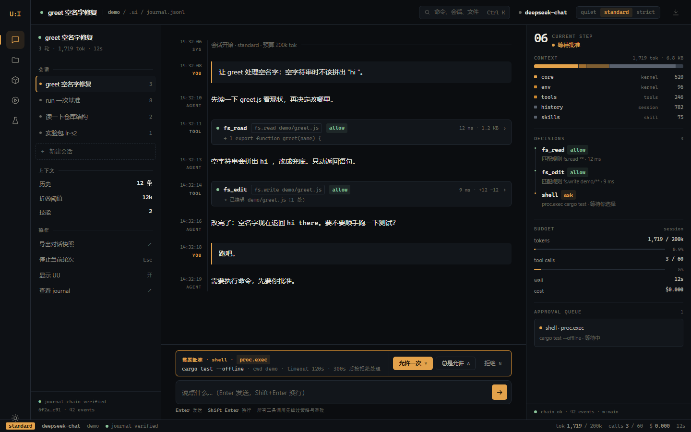

UI / before → after
从「通用聊天」到「飞行记录仪」
Before
蓝白 SaaS 壳 · 右栏只有 kv 表 · 审批在滚动区

After
暗色仪表盘 · 当前步右栏 · 审批固定在输入框上方
对话
气泡 → 时间 / 角色 / 工具 / 决策共用一条时间线；工具两行，第一行身份与效果，第二行结果。
当前步
账本 kv → 快照分段条 + 决策时间线 + 预算 + 审批队列，数据来自 on_snapshot / on_decision。